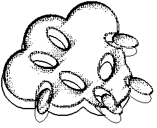

Complexity, Self-Emergence, Evolution, Artificial Life
I am interested in complexity, self-emergence, ALife. I think these issues will profile the future of computing.
"Currently, genetic programming, genetic algorithms, artificial life is massively making use of random number generators. Unfortunately, to generate every single random number, I am using up the 5 million transistors in my computer for a considerable fraction of a second. However sometimes nature seems to use, instead of random numbers, chaotic series that emerge as a naive property of dimensions at which you are faced with quantum effects. I hope that someday we will be able to use tiny molecules, atoms or properties of light to generate flash speed chaotic series instead of expensive random number generators. Thus, a hardware optimized for evolutionary systems can be beyond our imagination in speed and efficiency. Think of the seeming adaptation power and intelligence of ecosystems coupled with such speed. In "2001 Space Odyssey" Arthur C. Clark imagined the self conscious computer HAL covering the walls of the control room of the shape ship Discovery with huge modules. I thing HAL will be a pocket computer."
A system based on evolution might be able to generate smart designs (i.e. Nature). In the future, when the greedy random number needs of the genetic algorithms can be satisfied by chaotic series via quantum properties of micro design, the speed of evolutionary systems will be beyond our imagination, far surpassing the speed that can be possible by massive parallelism only.
The challenge is there waiting to be solved. I will be pleased if you comment on my thoughts about facing this challenge, which is also my PhD thesis work at Bogazici University, Computer Engineering Department.
If you are looking for papers to read then there are many
- an essay on the evolution of complex systems
- many papers, and
- hyper essays on complexity and evolution.
- Utilities useful for Win95/NT users to read postscript files archived on Unix machines (.tar, .gz., .Z extensions).
- You are welcome to suggest papers and essays to list here.
If you are searching on your own then use the
I am also maintaining Concept Space to collect little drips of thought".
Highlights
- Artificial life links
- Constructivist Artificial Life by Alexander Riegler
- Complexity Papers Online
- European Network of Excellence on Evolutionary Computation
- Epistemological Constructivism
- Links on Complexity, Self-organization and Artificial Life
- Self-Organizing
- The Generalized Theory of Life
- Thomas S. Ray
Events of '99
Events of '98
- EUROGP'98 FIRST EUROPEAN WORKSHOP ON GENETIC PROGRAMMING 1998; PARIS, 14-15 April, 1998
- EVOROBOT'98: FIRST EUROPEAN WORKSHOP ON EVOLUTIONARY ROBOTICS; April, 16-17, 1998
- Fifth International Conference on Parallel Problem Solving from Nature; Amsterdam, 27-30 September 1998
- Thomas S. Ray at Bogazici University, Istanbul, Turkey; Rain Forests; Digital Life; 10-12 June 1998. Contact Umur@WriteMe.Com.
Umur Ozkul
email: Umur@WriteMe.Com
This page hosted by  .
Get your own Free Home
Page
.
Get your own Free Home
Page
Go to the Research
Triangle Home Page.
(Artificial life does not make money so here is my resume ).